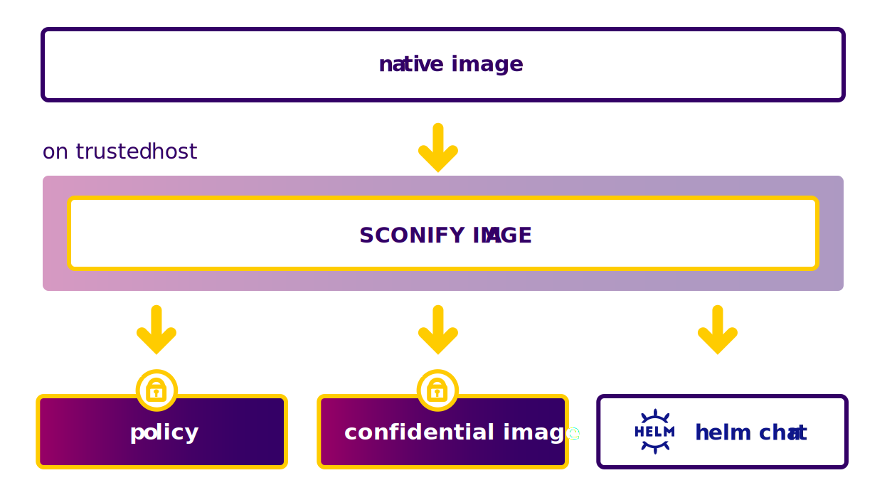

Sconifying A Stateful Service
This is a simple example of how to sconify a stateful service into a confidential, stateful service. The service is already containerized. To sconify the service, we transform its container image into a confidential container image and in the same step, we generate a security policy as well as a helm chart to be able to deploy the confidential container image in a Kubernetes cluster.

You can clone this example by executing:
git clone https://github.com/scontain/hello-world-kubernetes.git
Native Code
The native service consists of a very simple Python program (see https://github.com/scontain/hello-world-kubernetes/blob/master/native-image/code/app.py)
that implements a counter. The counter is stored in a file. It creates this file and initializes it with value "0" - in case the file does not yet exist. The path of this file can be changed via option -v PATH. Next, it reads the integer stored in the file, increments it by 1, and writes back the new content of the file.
...
@click.command()
@click.option('-v', default='/V1/num', help='file number of executions.')
def main(v):
if not os.path.exists(v):
print(f"{v} does not exist, creating ... ")
os.mknod(v)
print("And writing 0 to it ... ")
write_int(v,0)
num = read_int(v)
print(f"The number of executions is {num}" )
write_int(v, num+1)
...
You can build a native container image from this via a Dockerfile that we provide (see https://github.com/scontain/hello-world-kubernetes/blob/master/native-image/Dockerfile) and run it on your local machine or in a Kubernetes cluster.
Protection Goals
This example focuses on ensuring the integrity of the counter value stored in file /V1/num. This counter could represent, for example, the number
of times this program has been executed. We want to ensure that this counter cannot be modified by any other programs or any administrator with access to our system - without being noticed. To do so, we need to protect against the following attacks:
- the adversary changes the program code or the libraries used the code,
- the adversary changes the python engine that executes the code,
- the adversary changes the content of the file
/V1/num - the adversary overwrites the content of the file
/V1/numwith an old value - the adversary deletes file
/V1/num - the adversary changes the argument of program to another file, say,
-v /tmp/num - ...
To protect the counter, we sconify the container image.
Sconification
In the sconification process, we
- create a confidential container image that protects all code against modifications by an adversary,
- we store the file in a Kubernetes volume,
- we transparently encrypt the Kubernetes volume to protect against modifications, rollbacks, and deletions by the adversary, and
- we deploy the confidential service with the help of a helm chart that we generate
The sconify_image performs all these steps (see https://github.com/scontain/hello-world-kubernetes/blob/master/demo.sh#L174-L199): We specify as arguments (amongst other details):
- the name of the native image (
--from=...), - the name of the created confidential image (
--to=...), - the command that is executed by the confidential image (
--command=...) - a persistent Kubernetes volume that is used to store the file
/V1/num
Running the example
The repository contains a script demo.sh(see https://github.com/scontain/hello-world-kubernetes/blob/master/demo.sh) to execute this example using
- minikube on your local machine (
./demo.sh -m), - Azure Kubernetes Service (AKS) via
./demo.sh -a -r <your registry>, or - any Kubernetes cluster via
./demo.sh -n -r <your registry>
For more details on how to run this, please check https://github.com/scontain/hello-world-kubernetes.
Attacking the execution
You can log onto the Kubernetes node that executes this example. The volume is stored at path /mnt/test-pvc and you can copy the
content of the file num and later restore this content before running next instance of the code. In this case, the log
will show an error (something like this):
SCONE version: 5.4.0-25-g25a661e71-master (Thu May 27 18:04:17 2021 +0200)
Enclave hash: e2f7cb1c13fa16d2a48f1727ebf1c20ac8185e72e14f647e876072e1f006377d
[SCONE|FATAL] src/shielding/file_content_processor.c:307:_load_chunk(): Verification of file chunk 0 (bytes 0 to 4091) of file /V1/num failed.
Generated Policy
The sconification creates a policy for this Python program. This defines
- defines a name space (
ns-8991241572316) and a session name (python-session) - defines that only the creator of this policy can access the policy (note that there is no root admin that could overwrite this access right)
- define how the name of the service (
python-service) - how to attest the program (
mrenclaves) - defines encryption key for the container image (
fspf_key ...) - defines an encrypted volume (
V1) and where it is mounted (/V1)
The actual policy would look like this:
name: ns-8991241572316/python-session
version: "0.3"
# Access control:
# - only the data owner (CREATOR) can read or update the session
# - even the data owner cannot read the session secrets (i.e., the volume key and tag) or delete the session
access_policy:
read:
- CREATOR
update:
- CREATOR
services:
- name: python-service
image_name: python-service_image
mrenclaves: [e2f7cb1c13fa16d2a48f1727ebf1c20ac8185e72e14f647e876072e1f006377d]
command: "python3 /code/app.py"
environment:
SCONE_MODE: hw
SCONE_LOG: "7"
LANG: "C.UTF-8"
PATH: "/usr/local/sbin:/usr/local/bin:/usr/sbin:/usr/bin:/sbin:/bin"
pwd: /
fspf_key: 4ee511ed8963f1b8034f33cfbb57f8800a6c2f17e64e4ed89122fc25e2ee50b1
fspf_tag: 849565fe4a941e2be3bcc3c9d46f40c1
fspf_path: /fspf/fs.fspf
volumes:
- name: V1
images:
- name: python-service_image
volumes:
- name: V1
path: /V1
security:
attestation:
tolerate: [debug-mode, hyperthreading, insecure-igpu, outdated-tcb, software-hardening-needed, insecure-configuration]
ignore_advisories: "*"
Generated Helm Chart
The generated helm chart is located in directory charts/python-service. Files values.yml defines a set of arguments that can be set
when deploy the chart via helm install. Moreover, we also generate a README.md that describes the arguments of the charts.